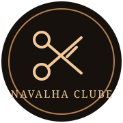

CORTE · BARBA · ESTILO
Navalha
Clube.
Seu estilo merece presença.

Presença de verdade.
Qual vai ser o próximo cuidado?Escolha o serviço e monte sua solicitação
Mais opções logo abaixo

CORTE · BARBA · ESTILO
Mais opções logo abaixo